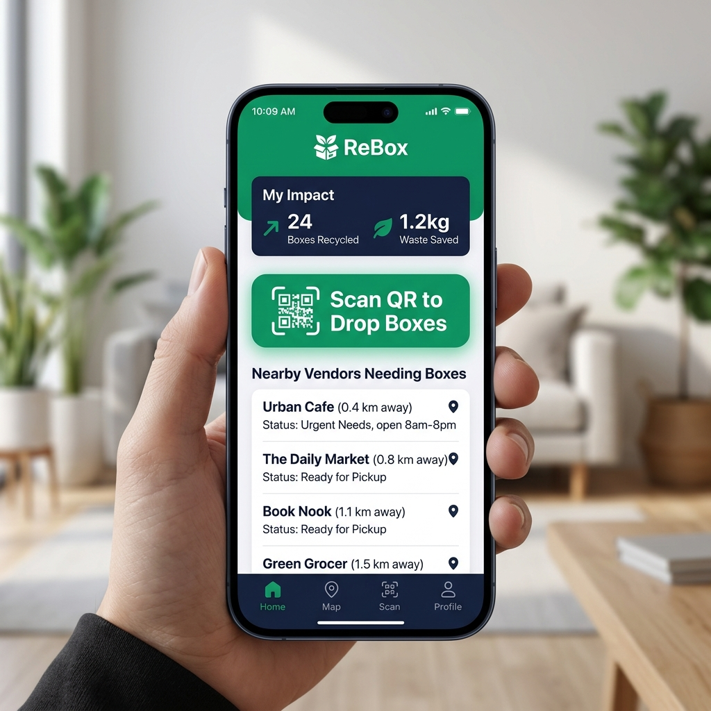
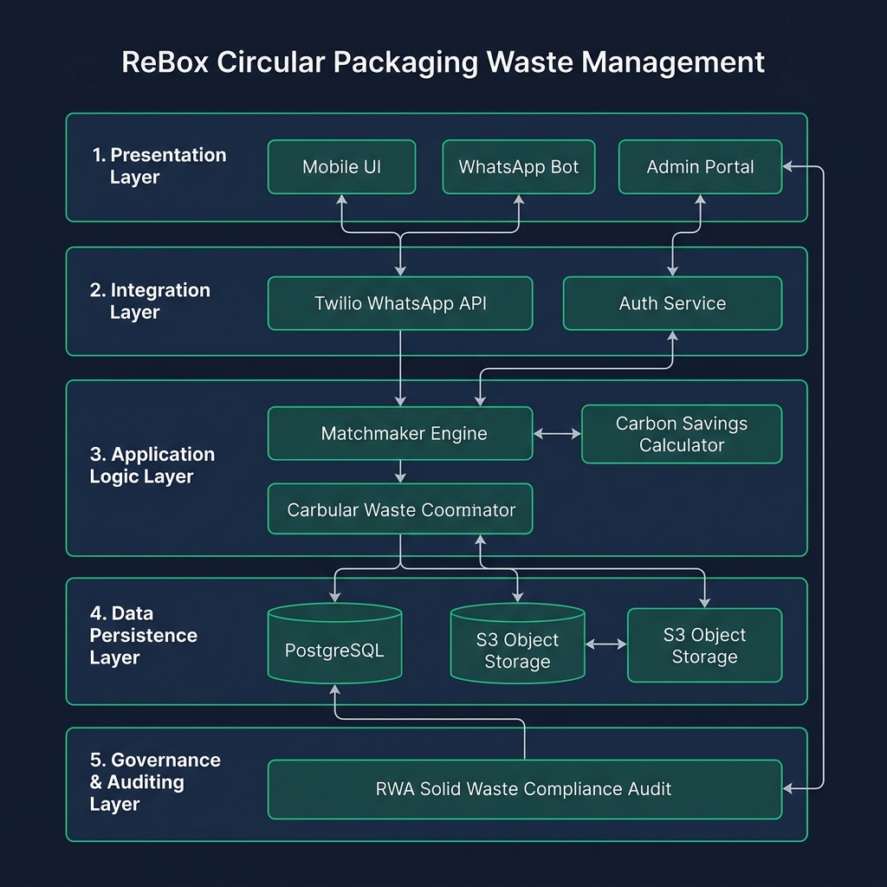

1. Executive Summary
ReBox is an innovative, high-impact circular economy system designed to address the massive packaging waste generated by the e-commerce boom in urban India. By intercepting structurally intact cardboard boxes at the apartment level and redirecting them to local micro-vendors, ReBox bridges a critical resource gap. Every day, approximately 15 million e-commerce parcels are shipped across India, resulting in millions of single-use corrugated cardboard boxes being discarded. The current waste management pipeline is almost entirely linear: residents discard boxes, municipal waste handlers or informal scrap dealers collect them, and they are eventually sold to pulp recycling mills for a meager Rs. 3 per box (calculated by weight). This process is energy-intensive, chemical-heavy, and downcycles high-quality long fibers after only a single use. Meanwhile, local retail vendors, kirana store owners, bakeries, and hyper-local couriers routinely pay Rs. 20–35 for a brand new cardboard box of equivalent size.
The ReBox platform provides a closed-loop alternative that prioritizes REUSE over recycling. The system consists of three integrated layers: (1) Physical Collection Bins: Weather-proof green bins placed in gated apartment basements adjacent to elevator lobbies, providing a zero-friction disposal point; (2) Twilio WhatsApp Bot: A lightweight, QR-enabled mobile interface that allows residents to log drops in under 15 seconds and alerts registered vendors when boxes are ready for pickup, eliminating the need to download dedicated mobile applications; and (3) Analytics Dashboard: A web-based portal that tracks community leaderboards, RWA waste audits, and individualized carbon offset metrics (saving approximately 1.1 tonnes of CO₂ equivalent and 26,000 liters of water per tonne of corrugated paper reused). This report documents the complete, five-phase Design Thinking lifecycle of ReBox, demonstrating its viability, operational feasibility, and high user acceptance through extensive on-ground testing across Bengaluru, Hyderabad, Tumkur, Bidar, Kadapa, and Tirupati.
2. Paper Interface & Sketch Diagrams
We designed low-fidelity wireframes to map the user flows and screen layouts for our three key user groups, clarifying the digital paths before developing clickable UI mockups. The paper wireframes allowed us to iterate rapidly on layout options and get quick feedback from target users without writing any code. For the Resident dashboard, we focused on a clean, single-screen layout containing a large 'Hero Metric' showing boxes saved and carbon points. For the Vendor portal, we focused on a simple map view showing available inventory at nearby gated complexes, allowing them to request box batches easily. For the Guard screen, we optimized for large touch buttons and minimal text inputs since guards often operate in high-glare gate environments and need to verify transactions in under 5 seconds:
Resident Web App Dashboard
- Hero Metric: "Boxes Dropped: 24" | "CO₂ Saved: 1.2 kg" (equivalent to 0.15 trees saved).
- Action Button: "Scan QR to Log Drop" (opens mobile camera to capture QR metadata).
- Local Demand Widget: "Nearby Ramesh Fruit Stall needs 5 medium boxes."
- Tabs: Home | Environmental Stats | Leaderboard Rank | User Profile.
Vendor Request Portal
- Inventory Tracker: Bins near me (Bin A: 12 boxes, Bin B: 8 boxes).
- Action Button: "Request 10 Medium Boxes" (claims and reserves inventory for hyper-local pickup).
- Financial Widget: "Savings this month: Rs.450" (purchasing Rs.5 second-hand vs. Rs.25 new).
- Tabs: Map | Active Claims | Financials | History.
Guard Verification Dashboard
- Pending Handovers: List of approved vendor pickups (e.g., Ramesh Fruits — 5 boxes).
- Action Button: "Verify Release" (confirming the vendor picked up the boxes and checking out the vendor via simplified security OTP).
- Alert Indicator: "Green Bin 1 is 85% full" (notifying guards to clear space or alert logistics).
3. Clickable UI Mockups (MVP)
To validate our concepts without the high cost of building a fully functional coded app, we built two interactive clickable UI mockups. The main web mockup was built using responsive HTML5/CSS3 and vanilla Javascript. It simulates the exact workflows of the three primary users: (1) residents scanning simulated QR codes to log box drops and immediately viewing their updated carbon scores, (2) local vendors viewing sorted S/M/L box counts and submitting reservation requests, and (3) security guards confirming pickups using simplified OTP codes. We also developed a 7-Cycle Box Lifecycle Simulator that models how a box wears down over multiple reuse cycles, demonstrating the cumulative ecological and economic benefits at each stage. Below is a compilation of our interactive UI mockups:
🔗 Live Prototype Links
We developed interactive web-based UI mockups to simulate how the system operates:
- Clickable App Mockup: A responsive HTML UI mockup simulating the shopper, vendor, and guard dashboards. Users can click through to experience the zero-friction process.
💻 Launch UI Mockup - 7-Cycle Box Lifecycle Simulator: A visual simulator showing box wear-and-tear and carbon savings over multiple reuses.
🔄 Launch durability simulator

4. System Architecture Blueprint
Our backend and frontend infrastructure is structured into five core layers to ensure security, speed, and future scalability. Below is the multi-tiered system architecture diagram illustrating the interaction between the presentation layer, the API integration gateway, application logic, and the persistent storage engine:

1. Presentation Layer
Responsive resident web app (HTML5/CSS3/JS), vendor portal, guard verification screen, and Twilio WhatsApp interface. Built to render responsively across mobile and desktop viewports.
2. Integration Layer
Twilio Business API (WhatsApp message routing) and JWT authentication service (OTP-based mobile login via mobile SMS). Integrates with security gate logs.
3. Application Logic Layer
Orchestrates core functions: drop-off validation, matchmaking algorithm, carbon savings calculator, and vendor routing optimizer. Calculates paper pulp savings, water offsets, and vendor mileage.
4. Data Persistence Layer
PostgreSQL relational database storing user roles, bin stock, pickup logs, and S3 object storage for verification photos. Ensures structural logs are auditable.
5. Governance & Auditing Layer
Monitors system performance: RWA compliance checker, database audits, and data privacy masking (masking phone numbers).
9. References
- Ministry of Environment, Forest and Climate Change (MoEFCC) — Extended Producer Responsibility Guidelines, 2022.
- Indian Institute of Packaging — Corrugated Box Lifecycle Assessment Report, 2023.
- CPCB Annual Report on Solid Waste Management in India, 2023–24.
- Stanford d.school — Design Thinking Process Model.
- IDEO — Human-Centered Design Toolkit.
- Corrugated Packaging Alliance — Environmental Footprint of Corrugated Containers, 2021.
- RedSeer Consulting — Indian E-Commerce Logistics Overview, 2024.
- WhatsApp Business API Documentation — Meta for Developers.